Workshop-GIT 1
Aprendiendo Git
Control De Versiones
Un control de versiones es un sistema que registra los cambios realizados en un archivo o conjunto de archivos a lo largo del tiempo, de modo que puedas recuperar versiones específicas más adelante. Aunque en los ejemplos de este libro usarás archivos de código fuente como aquellos cuya versión está siendo controlada, en realidad puedes hacer lo mismo con casi cualquier tipo de archivo que encuentres en una computadora

Que es un GIT
el sistema de control de versiones moderno más utilizado del mundo. Git es un proyecto de código abierto maduro y con un mantenimiento activo que desarrolló originalmente Linus Torvalds, el famoso creador del kernel del sistema operativo Linux, en 2005. Un asombroso número de proyectos de software dependen de Git para el control de versiones, incluidos proyectos comerciales y de código abierto
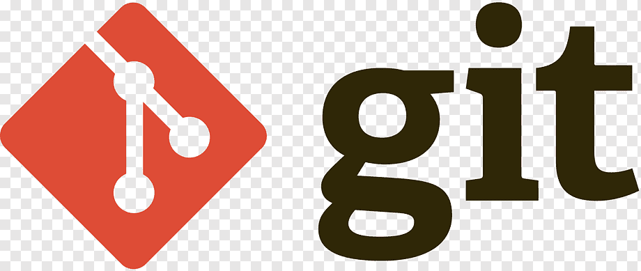Que Es Un Repositorio?
es un tipo de almacenamiento digital centralizado que los desarrolladores utilizan para realizar y administrar cambios en el código fuente de una aplicación. Los desarrolladores tienen que almacenar y compartir carpetas, archivos de texto y otros tipos de documentos al desarrollar software. Un repositorio cuenta con características que permiten a los desarrolladores rastrear con facilidad cambios en el código, editar archivos de manera simultánea y colaborar de forma eficiente en el mismo proyecto desde cualquier ubicación.
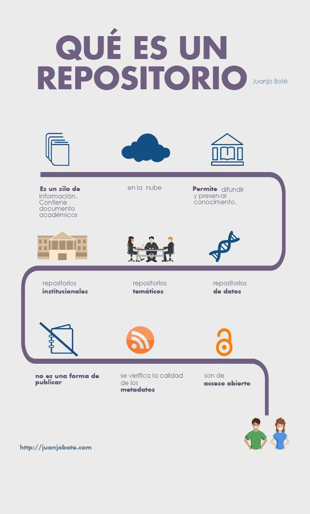Repositorio Local
Es un contenedor de archivos que se encuentra en tu ordenador. Éste puede tener un proyecto lleno de diferentes archivos y es allí donde vas haciendo tus modificaciones y guardardolas para así, ir creando varias versiones. Cuando creas un repositorio local automáticamente se crea un directorio (.git) que no vas a poder verlo dentro de tus archivos pero que esta allí y es el que contiene todas las configuraciones de tu git (.git = repositorio entero).
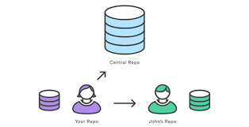Repositorio Remoto
Son versiones de tu proyecto que están hospedadas en Internet o en cualquier otra red. Puedes tener varios de ellos, y en cada uno tendrás generalmente permisos de solo lectura o de lectura y escritura. Colaborar con otras personas implica gestionar estos repositorios remotos enviando y trayendo datos de ellos cada vez que necesites compartir tu trabajo
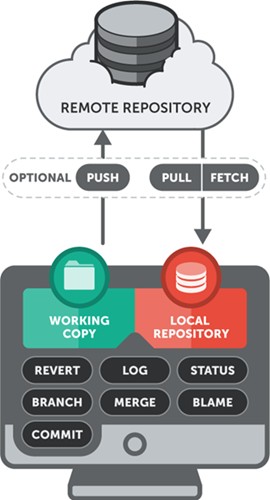¿Qué es GITHUB?
GitHub es una plataforma donde puedes almacenar, compartir y trabajar junto con otros usuarios para escribir códigos. Almacenar tu código en un "repositorio" en GitHub te permite: Presentar o compartir el trabajo. Seguir y administrar los cambios en el código a lo largo del tiempo.

Que Es Una Rama En GIT
Una rama es simplemente una versión de la colección de directorios y archivos del repositorio. Cada vez que se crea una nueva rama, se crea una copia de la colección de archivos actual. A su vez, a partir de esta rama puedes crear más ramas. A veces puedes hacer que estas ramas y los cambios que hayas podido realizar en sus ficheros o directorios sean integrados en la rama principal. A esta acción, la de integrar una rama en otra, se le llama merge o fusionar.

Para Que Sirven Las Ramas
En un entorno de colaboración, donde diferentes personas están trabajando en un mismo código, se genera una evolución del código en paralelo. Mientras alguien está trabajando en añadir una nueva característica al proyecto, otra persona puede estar arreglando un bug y otra en añadir alguna documentación. De esta forma, partiendo de un mismo código, se generan diferentes ramas. Esto sirve para aislar el trabajo de cada persona y que, una vez concluido, se pueda integrar en el tronco de nuestro repositorio que será, dicho de otro modo, la rama principal.
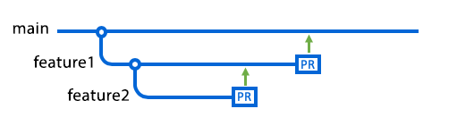Los Tres Estados en Git
Al usar Git, los archivos de tu proyecto se pueden encontrar en uno de los siguientes estados:

Consola o Linea De Comandos
La línea de comandos es el único lugar en donde puedes ejecutar todos los comandos de Git - la mayoría de interfaces gráficas de usuario solo implementan una parte de las características de Git por motivos de simplicidad. Si tú sabes cómo realizar algo desde la línea de comandos, seguramente serás capaz de averiguar cómo hacer lo mismo desde una interfaz gráfica.
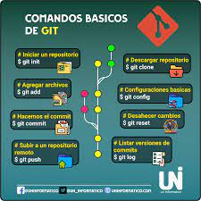- Comando Linux Ls
- Cd Directorio
- Cd . .
- Comando Pwd
- Mkdir Nombre
- Touch Nombre
Funcionamiento De Comandos
Este listará todos los archivos situados en la posición actual. Si introduce el comando ls con un nombre de archivo determinado, listará sólo dicho archivo, si es que existe.
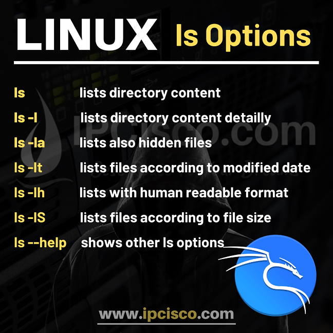permite moverse entre directorios del sistema. Puedes cambiar de directorio especificando la ruta absoluta desde el directorio raíz o relativa desde tu ubicación actual, en Linux el directorio actual se indica con el signo .
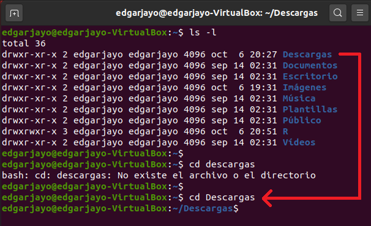es utilizado para moverse hacia arriba en la estructura de directorios desde el directorio actual al directorio que lo contiene (el directorio padre).
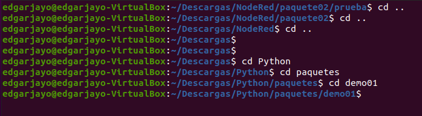muestra el directorio actual en el que te encuentras trabajando en la línea de comandos o en la consola.
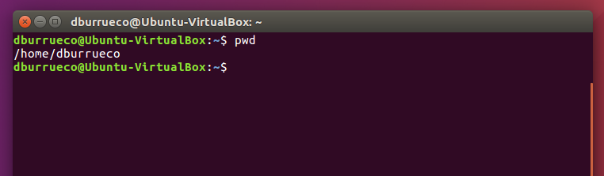Es un comando básico pero esencial en sistemas Unix y Windows para crear nuevos directorios o carpetas en el sistema de archivos, proporcionando una forma sencilla de organizar y gestionar archivos y datos.
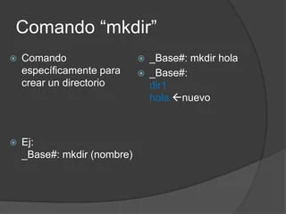Su función principal es crear un archivo vacío con el nombre especificado o actualizar la marca de tiempo de un archivo existente

Nombre y funcionamiento de los comandos utilizados
| git --version | Indica la versión del del gitv |
| git init | iniciar el repositorio “se hace solo una vez” |
| git config user.name | Mostrar el nombre de usuario local que esta en Git |
| git config --global user.name | Ingresar el nombre de usuario |
| git config user.email | Mostrar el correo electrónico del usuario local en Git |
| git config --global user.email | Ingresar el correo electronico personal |
| git clone | Verificar si existen otras cuentas de github en el computador |
| git add | Esto añadirá los archivos indicados al área de staging. |
| git status | Enumera todos los archivos nuevos o modificados |
| git commit -m Add new search feature | Esto creará un nuevo commit en tu repositorio y añadirá una referencia al commit en la rama en la que estás trabajando. |
| Git log | Enumera el historial de la versión para la rama actual |
| git add reame.md | para agregar cambios realizados en el archivo |
| git commit -m "first commit" | crea un nuevo commit con los cambios que has agregado |
| git branch -m main | renombra la rama en la que te encuentras actualmente a main |
| git remote add origin | se utiliza para agregar un repositorio remoto a tu repositorio local |
| git push -u origin main | se utiliza para enviar cambios locales a un repositorio remoto |
| git push origin main | comando que permite enviar los cambios de un repositorio local a un repositorio remoto. |